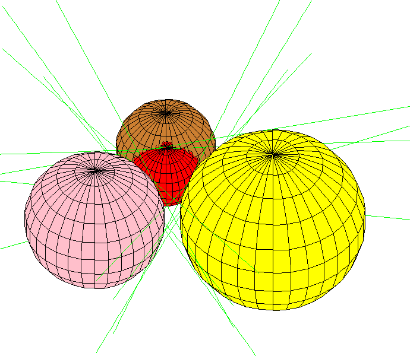

Megyesi shows there is a configuration of four spheres in
R
3
with affinely dependent centers and 12 real common tangents. Here is one such configuration.

This picture was drawn with
this
maple file.
Last modified: 22 May 2001 by Frank Sottile